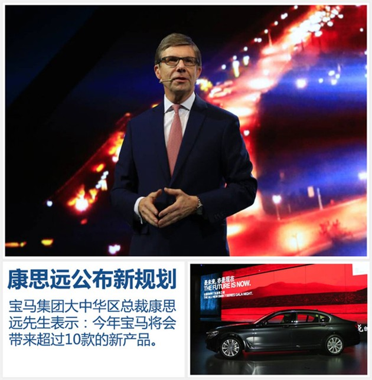
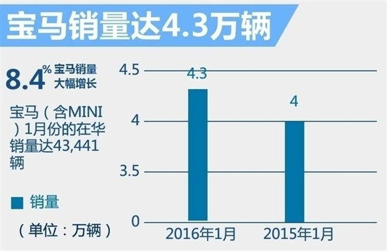
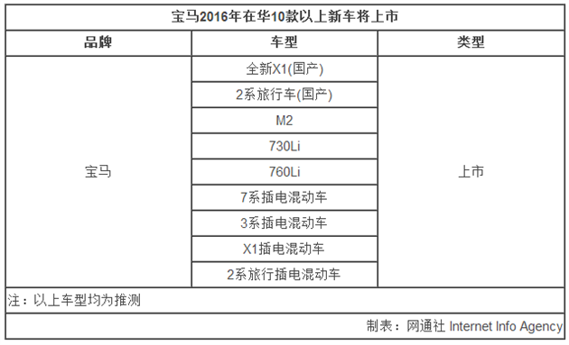
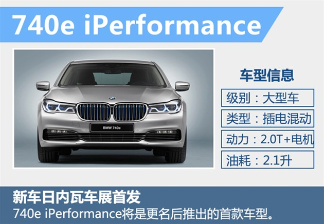
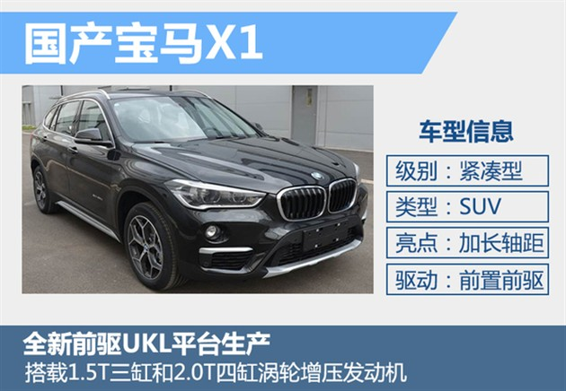
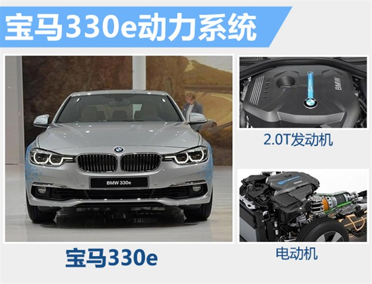

NEWS
宝马CEO康思远 2016年将再发布5款旗舰车
2016年03月02日 08:24 来源：网通社
2015年3月1日三亚，宝马集团大中华区总裁兼首席执行官康思远上任后首次在新车发布会上公开亮相，这一天是全新宝马旗舰轿车7系第五款车型730Li的上市。康思远向网通社表示：“全新BMW 730Li是同级市场中的高效先锋，实现了‘双6.3’的表现，即百公里加速时间6.3秒，百公里综合油耗6.3升。这也是7系家族推出的第五款车型，到2016年底，7系家族将扩充至十余款，其中包括插电式混合动力车型和一款7系百年纪念版。”
面对宝马集团全球最重要的市场，康思远也全盘道出了针对中国市场的“2016战略”：“2016年还将在中国市场推出10余款BMW车型；上半年将新增2款国产车型（全新X1和2系旅行车）；在中国市场还将陆续推出4款新能源车型，从而使BMW新能源车产品阵容增至6款；以及驱动可持续增长的本土化战略，从本土人才培养到本土化生产，都将本着‘在中国、与中国、为中国’的宗旨。
BMW中国已拥有235万车主 将不断进化品牌
康思远表示：“我们在中国已经拥有235万名车主。如何在满足如此大范围客户需求的同时，依然保有强大的品牌感染力，是我们的重要课题。这里，我可以对大家说，我们的品牌将不断进化，同时坚守BMW的DNA——以创新为本的‘纯粹驾驶乐趣’"。
BMW中国市场2016年重回高速增长轨道
在2015年，中国汽车市场增速放缓，不过宝马在华全年总交付量仍达到463,736辆，较2014年而言有着一定的增长。同时进入到2016年以后，宝马在华销量重新进入高速增长轨道，据悉：宝马（含MINI）1月份的在华销量达43,441辆，相比去年同期的40,081辆，同比增长8.4%。在全新宝马2系旅行国产后，将对宝马在华的销量增长起到进一步的促进作用。
 2016年BMW在中国市场持续推出10款以上新车型
在新产品的导入方面，宝马在今年除将推出两款全新国产车外，还将有多款新产品陆续推向市场。对此，康思远先生也介绍道：“2016年，我们还将在中国市场推出10余款BMW车型。进一步丰富我们的产品阵列，凸显了BMW品牌的丰富内涵——将出众的驾驶乐趣与可持续之悦、社会责任之悦相结合。”
随着中国新能源汽车市场的增速加大以及国家对于新能源汽车发展的扶持，宝马品牌在华也已推出了包括530Le和X5 xDrive40e在内的多款新能源产品。在2016年，宝马仍将推出多款新能源产品，对此康思远先生向网通社表示：我们将继续巩固在可持续出行方面的领先地位，今年将在中国陆续推出4款新能源车型，从而使BMW新能源车产品阵容增至6款，为中国的先锋客户提供最丰富的选择。除了推出新车型，我们还将与本地伙伴合作，于年内在几个大城市建设超过1000个即时充电™充电桩。
宝马旗下的紧凑型SUV全新X1将在今年迎来国内上市，新车将推出标准轴距版和长轴距版车型，其中长轴距版车型有望添加7座布局选装项，来迎合火热的七座SUV市场。此外，新款X1还将推出一款插电混动版车型，新车将搭载由1.5升三缸涡轮增压汽油发动机和一台后置电动机组成混动系统，总功率输出可达142千瓦，预计综合油耗将保持2L左右的水平。
 3系作为目前宝马在华主销车型之一，在今年有望以进口形式销售插电混动版本，并命名为330e。新车在动力上采用的2.0T+电动机的插电混动系统，最大联合功率可达到185kW，峰值扭矩则为420N·m。另外，330e作为一款插电混动产品，燃油经济性的表现十分出众，百公里综合油耗仅为2L，相比现款3系同搭载2.0T发动机的320i车型6.7L/100km的数据而言，油耗下降了约70%。（网通社 2016年3月1日 三亚报道）
责任编辑：刘琦